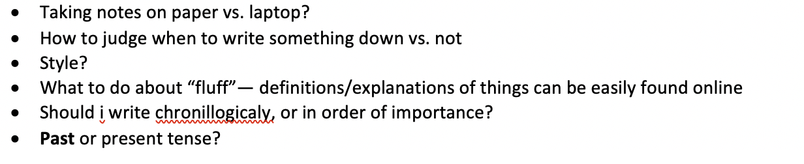
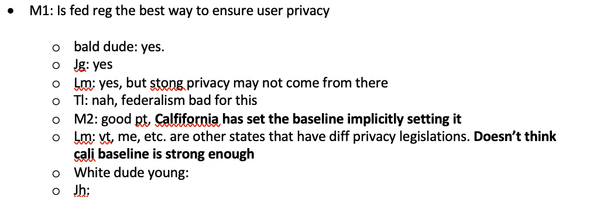
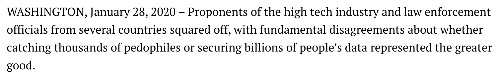
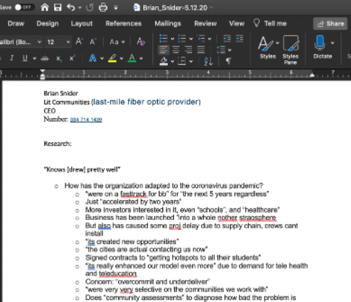
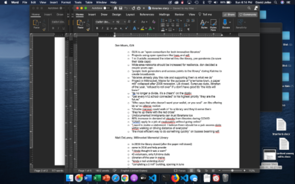
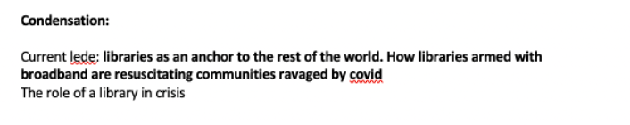

Broadband Breakfast is an online publication that covers issues of technology with an emphasis on internet connectivity. Even among tech publications, it is non-partisan, its main bias being towards ensuring broadband access to everyone. It is a small company, often with no more than 5 employees.
I entered Breakfast with no reporting experience. Over time, I learned how to write up the three different kinds of stories, which represent progressively more complex pieces of journalism.
I encountered many challenges when I first started reporting. Some questions I recorded after my first event
The hardest among them was scrambling to record all of teh nuanced points ocurring in a conversation or panel. A sample of my first notes looked like this
back then, my writing was not very organized, accurate, or spelled correctly
my ledes, or the opening sentence that summarizes the story and grips people's attention, was not all-together too gripping
after months of working with Broadband, I developed a verbal memory for recording peoples words, developed a shorthand, used a computer whenever i could, and focused almost exclusively on capturing the most important quotes, trusting that the story would arise out of their whole
biggest part is tapping into the sources i cultivated, interviewing (through zoom cause of pandy), getting quotes, and combining with research
insert audio recording here
then I would sift through quotes to find the gems and group them into themes
by engaging in this process, the heart of the story would naturally emerge
